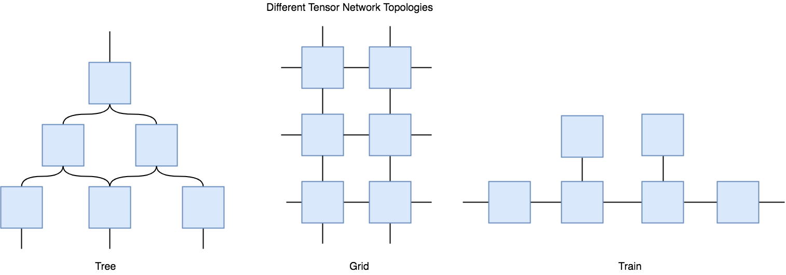
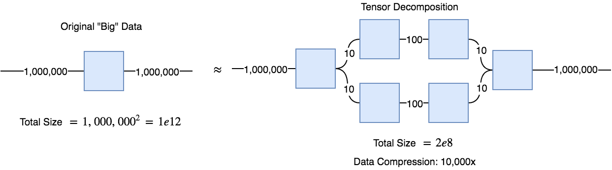
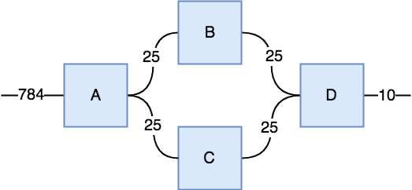
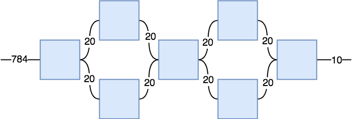

Tensor Networks
On Deep Tensor Networks and the Nature of Non-Linearity
Abstract: Tensor Networks can be seen as a higher-order generalization of traditional deep neural networks, and yet they lack an explicit non-linearity such as applying the ReLU or sigmoid function as we do with neural nets. In this article, we cover a different perspective on what linearity vs nonlinearity means by treating function arguments as "resources" that can be consumed. Linear functions are those that "conserve resources" (i.e. they don't copy or delete their inputs).
We then cover what tensor networks are, how they work, and how this different notion of linearity gives insight into how tensor networks can learn non-linear transformations. We demonstrate that while tensor networks are locally linear, they can exhibit global non-linear behavior due to the action of copying input data and inpendently transforming each copy. Hence, unlike neural networks, the non-linearity of tensor networks arises soley from the architecture and topology of the network itself. Lastly, we demonstrate how a simple tensor network can perform reasonably well on the FashionMNIST dataset using PyTorch's einsum function.

Deep learning algorithms (neural networks) in their simplest form are just a sequence of two operations composed to some depth: a linear transformation (i.e. a matrix-vector multiplication) followed by the element-wise application of a reasonably well-behaved non-linear function (called the activation function). Together the linear transformation and the non-linear function are called a "layer" of the network, and the composition of many layers forms a deep neural network. Both the depth and the non-linearity of deep neural networks are crucial for their generalizability and learning power.
The most credible explanation for why depth matters in neural networks is that depth models hierarchy, i.e. the idea that some data are at a higher and lower levels of abstraction. "My Jack Terrier dog Spot" is a concrete instance of the more abstract concept of "dog" or even "animal." Hence depth naturally models these kinds of hierarchical relationships in data, and it turns out pretty much all of the data we care about has a hierarchical structure (e.g. letters -> words -> sentences, or musical notes -> chords -> bars -> songs). Another word for hierarchy is composition; complex things are often composed of simpler things, which are composed of yet simpler things. Hence deep neural networks have an (inductive) bias toward learning these compositional/hierarchical relationships, which is exactly what we want them to do.
Okay so depth is important. But why is the non-linear "activation" function so important for deep learning? An almost tautological answer is that if we want our neural network to be able to model non-linear relationships, it must have some non-linearity itself.
Another reason is that without the non-linear functions, a sequence of just linear transformation layers can always be "collapsed" into a single linear transformation. This is basic linear algebra; the product of any sequence of matrices (i.e. matrix composition, hence composition of linear transformations) can always be reduced to a single matrix/linear transformation. So without the non-linear function in each layer we forfeit the compositionality (depth) property of deep neural networks, which allow hierarchical abstraction as you go deeper in the network.
Since we generally use "bias units" in the linear portion of a layer, every layer can actually perform affine transformations (linear transformation + a translation). We know from linear algebra that affine transformations can only uniformly stretch and shrink (scale), rotate, sheer and translate vectors in a vector space. If we think of some data of interest as a point cloud in some N-dimensional space, then if it is non-random data, it will have some sort of shape.
For example, some fairly non-complex periodic system might produce data points that lie on a 2D circle or a higher-dimensional loop. The typical goal for a supervised neural network is to map this point cloud onto some other point cloud living in a different space with a different shape. When we one-hot encode the output of a neural network then we're mapping our point cloud onto essentially orthonormal unit basis vectors in a different space. Quite literally, we're transforming some geometric shape (or space) into a different shape. The task of the neural network then is to figure how to construct a new shape (the output/target space) from a starting shape (the input data point cloud) using only the tools of affine transformations and (usually) a single type of non-linear function, such as the rectified linear unit (ReLU) or sigmoid.


On the left is a graph of the sigmoid activation function. Clearly it is a curved function and hence not linear. Sigmoid has mostly fallen out of favor and ReLU has become the de facto standard activation function. The right figure is the graph for ReLU. ReLU is just \(max(0,x)\), and has two "pieces," the flat line for when \(x \lt 0\) and the sloped line for when \(x \geq 0\). So both of ReLU's parts are lines, why does it count as a non-linear function? A standard, but unintuitive, mathematical definition for a linear function is a function that has the following properties:
(Definition 1.1: Linear Function)
If you check to see if ReLU has these properties you'll find that it fails both properties, and hence it is not a linear function. For example, \(relu(-1+1) \neq relu(-1) + relu(1)\) and \(relu(-2 * 5) \neq -2*relu(5)\).
But this "linearity checklist" lacks a meaningful interpretation. I can use it to identify functions as linear or not but it doesn't give me any intuition.
Here's a better (more intuitive after some explanation) definition of a linear function. If we treat the input arguments of a function as resources, then:
(Definition 1.2: Linear Function) - A linear function is a function whose input data are always used exactly once. No more, no less.
This is a better definition from an intuitive point of view, but of course it lacks the mathematical precision of the linearity checklist. Nonetheless, the idea is that if we treat data as a resource that can be consumed and transformed then a linear function is a function that completely consumes its input data without copying (i.e. duplicating) or discarding it. This notion can be formalized, but we'll wait for later.
A linear function is like a chemical reaction. If you mix oxygen molecules with hydrogen molecules and add some energy you'll cause them to react to produce water molecules. The reagents are completely used up to produce the water molecule products. It is impossible to clone the oxygen molecules and it's impossible to delete them; all you can do is react them with other molecules. Indeed, the term "linear" as describing a function obviously has its roots in the easily visualizable line, but with definition 1.2, perhaps a better term might be "reactive function".
Consider this simple function: \(f(x) = mx\), where \(m\) is some constant. It is immediately clear that \(x\) only appears once on the right hand side of the equation, thus it is only "used" once. In contrast the non-linear function \(f(x) = x^2\) has \(x\) appearing twice on the right hand side of the equation (since \(x^2 = x \times x\)) and it is irreducible. The input argument is being implicitly cloned or copied in the function. It's as if there is a hidden sub-function \(\delta: x \rightarrow (x, x)\), such that we can rewrite \(f(x) = x^2\) as \(f(x) = *\delta(x)\), where the multiplication operator is acting as a prefix notated operator over the 2-tuple that the \(\delta\) function produces. This looks nicer in code:
import numpy as np
def clone(x):
return x,x
def square(x):
return np.prod(clone(x))
square(5)
25
Our slightly more mathematically precise definition of a non-linear function is thus most easily phrased in the language of computation.
(Definition 1.3: Non-linear Function OR the No-Cloning Rule) - A non-linear function is any function that at any point in its computation copies its input data. A linear function never duplicates its input at any point it the computation of its result.
Note that although we can make a function such as \(f(x) = x + x\), which appears to similarly clone its input, we can always reduce that expression to a non-cloned version, namely \(f(x) = 2x\), hence it is linear. With \(f(x) = x^2\) there is no way to reduce that expression to one where \(x\) only appears once on the right hand side of the equation. In other words, if you were to write a computer program to calculate or even hand calculate \(f(x) = x^2\) you would necessarily need to work with 2 copies of the value of \(x\), whereas with \(f(x) = 2x\) you could evaluate the result with just a single copy. This easily extends to multivariate functions, such as \(g(x,y) = x + y\). In this case we would say \(g(x,y)\) is linear with respect to each of its input arguments, or multilinear. Individually, \(x\) and \(y\) respect the linearity checklist and the no-cloning rule.
The no-cloning rule for non-linearity is reminiscent of the law of conservation of energy from physics (and the no-cloning theorem of quantum mechanics); indeed it can be construed as the information theory equivalent: "information is neither created nor destroyed in an isolated process (function)". This analogy will prove useful later.
With definitions 1.2 and 1.3 we now have a meaningful explanation for why the ReLU activation function is non-linear, it's because it uses the non-linear mechanism of copying. It violates the no-cloning rule. How? Well because it involves a conditional. Remember, \(relu(x) = max(0,x)\) and
In order to evaluate a conditional based on some input, you have to first duplicate the input so you can use one copy to evaluate (or measure) it and then use the other copy to actually do what you want with.
Okay, so we have a good intuition for what linear versus non-linear means in terms of the copiability of resources, but how is that intuition useful? Well my eventual goal here is to explore how definitions 1.2 and 2.3 explain how tensor networks work.
One interesting path is information theory. If you have a non-linear function like \(f(x) = x^2\), it is non-linear because \(x\) is copied. However, consider a function like \(f(x,y) = x*y\), it is called multi-linear because it is linear with respect to each of its input variables. Interestingly, if \(y = x\) (always) then this function behaves exactly like f(x)=x^2 but it's just in a different form. More generally, if \(f(x,y) = x*y\) but y is merely correlated with x, say \(y = x + e\) (e = noise) then you'll get f(x,y) = x(x+e) = x^2 + ex, which for a sufficiently small \(e\) will behave nearly the same as f(x) = x^2. So just a linear function of two variables that are highly correlated will produce non-linear behavior. Hence, if you have say two separate_linear_ dynamic systems that start off completely un-entangeled with each having their own maximum degrees of freedom, if they start to become correlated/entangled with each other by interaction, then when taken together as a composite system, it may exhibit non-linear dynamics.
A brief detour into calculus
Let's take a bit of a detour into the world of calculus. You know that the derivative of a function \(f(x)\) at a point \(a\) is the slope of the tangent line at that point. More generally for multivariate and vector-valued functions, the derivative is thought of as the best linear approximation to that function. You've seen the definition of the derivative in terms of limits or in non-standard analysis as an algebraic operation with an extended real number system (the hyperreals).
You know how to differentiate simple functions such as \(f(x) = x^3\) by following some derivative rules. For example, in this case we apply the rule: "take the exponent of \(x\) and multiply it by \(x\) and then reduce the power of \(x\) by 1." So we calculate \(\frac{df}{dx} = 3x^2\) (where \(\frac{df}{dx}\) is Leibniz notation, read as "the derivative of the function \(f\) with respect to variable \(x\)"). In a mathematically precise way we declare that if \(f(x)=x^{r}\), then \(df/dx = rx^{r-1}\). And of course we've memorized a bunch of other simple rules, which together form a powerful toolset we can use to compute the derivative of many functions.
Since differentiation is all about linear approximations, what new insights might definitions 1.2 and 1.3 give us about this fundamental concept in mathematics? Well, the limit definition of a derivative and all those differentiation rules can all be seen as special cases of applying definition 1.3 to non-linear functions. That is, what would happen if we took a non-linear function and re-construed it as a linear function?
Take our simple function \(f(x) = x^3\) and expand it to make explicit the copying that is happening, \(f(x) = x \cdot x \cdot x\). This function makes 3 copies of \(x\) and then reacts them together (multiplication) to produce the final result. The copying operation is totally hidden with traditional function notation, but it happened. Where is the copy operation in traditional set-theoretic mathematics? Why is it always hidden in the notation of non-linear functions?
The answer requires back-tracking to linear algebra. Remember how a matrix encodes a linear transformation? A full-rank square matrix will always result in a dimension-preserving transformation, e.g. a full-rank 2x2 matrix will always send a 2D vector to another 2D vector. A non-square matrix such as a 2x3 matrix, on the other hand, will send a 2D vector into a 3-dimensional space.
Thus the copy operation for scalars is the linear algebraic operation of projecting a lower-dimensional vector (even a scalar) into a higher-dimensional space. Thus we can think of \(f(x) = x^3\) as a function that takes a scalar, copies its input 3 times, then multiplies them together.
clone = np.array([5]) @ np.array([[1,1,1]])
print(clone)
print(np.prod(clone))
[5 5 5]
125
Where \(A\) is the "copy" matrix \(
What does this have to do with calculus? Well let's convert \(f(x)=x\cdot x \cdot x\) into a multi-linear function, i.e. \(f(x,y,z) = x\cdot y \cdot z\), except that we know \(x = y = z\) (or that they're highly correlated). It is multi-linear because if we assumed data independence, then the function is linear with respect to each variable. For example, \(f(5+3,y,z) = 8yz\) which is the same as \(f(5,y,z) + f(3,y,z) = 5yz + 3yz = 8yz\). But since we know our data is not independent, technically this function isn't linear because we can't independently control for each variable. But let's for a momement pretend we didn't know our input data is correlated in this way.
So remember, we already remember from school that the derivative of \(f(x)=x^3\) is \(\frac{df}{dx} = 3x^2\). We can't take "the derivative" of our new multi-linear function anymore, we can only take partial derivatives with respect to each variable. To take the partial derivative of \(x\), we assume the other variables \(y,z\) are held as constants, and then it becomes a simple linear equation. We do the same for \(y,z\).
But wait, we can't really hold the other variables constant because we know they're perfectly correlated (actually equal). What we're getting at is a case of the total derivative (see < https://en.wikipedia.org/wiki/Total_derivative >), which is how you take the derivative of a multivariable function with interacting variables. In this particular case, since \(x = y = z\), we just need to combine (sum) all these partial derivatives together and make all the variables the same, say \(x\).
Exactly what we get with through the traditional route. Or consider a slightly more complicated function:
Hence an intuition for copying as non-linearity even makes computing derivatives more intuitive, at least for me.
Tensor Networks
In the tensor algebra, a scalar is a 0-tensor, a vector is a 1-tensor, a matrix is a 2-tensor, and higher order tensors don't generally have names. But in order for the linear algebra operation we just did, we had to promote a 0-tensor to a 1-tensor. Tensors are often notated by labeled indices, as if they were containers and we find elements of the container by an addressing mechanism. A 0-tensor (scalar) isn't a container, it is the "atomic ingredient" of higher tensors, hence it does not have indices. Once you box together a bunch of scalars, you get a 1-tensor (a vector), and now to locate the individual scalars in the box, we label each one with a positive integer.
If we have a vector \(A = \langle{a,b,c}\rangle\), where \(a,b,c\) are scalars, then we could label them \(1,2,3\) in order. Hence we could refer to the \(i'th\) element of \(A\) as \(A_i\) or \(A(i)\). So \(A_1 = a\) or \(A(3) = c\). Now we can box together a bunch of 1-tensors (vectors) and we'll get a 2-tensor (matrix). A matrix \(M(i,j)\) hence would have two indices, so we need to supply two numbers to find a single scalar in the matrix. If we supply a partial address, such as \(M(1,j)\) then this would return a 1-tensor, whereas \(M(1,3)\) would return a 0-tensor. We can box together a bunch of 2-tensors to get a 3-tensor and so on. Importantly, anytime you box some \(k\)-tensors together to form a higher order tensor, they must be of the same size.
Tensors are in a sense compositional mathematical objects. Scalars are "made of" nothing. Vectors are "made of" scalars, matrices are made of vectors, 3-tensors are made of 2-tensors. Perhaps this suggests that tensors have even more power to represent compositionality in data than do conventional neural networks, which usually only represent depth-wise hierarchy.
If we have the natural compositionality of individual tensors, we can network them together to form (deep) tensor networks! As we'll soon see, however, there is no explicit non-linear activation function application in a tensor network, everything appears perfectly linear. Yet we Networking in a neural network is nothing more impressive than matrix multiplication. Tensors have a generalization of matrix multiplication called tensor contraction.
Tensor Contraction
Take a 2-tensor (matrix) and multiply it with a vector (1-tensor).
np.array([[1,0],[0,1]]) @ np.array([-2,5])
array([-2, 5])
The matrix on the left is the identity matrix, so it didn't do anything to our vector, but what's the computation happening and how can it be generalized to tensors?
The answer is tensor (or index) contraction. We'll denote a matrix \(A_{rt}\) and a vector \(B_t\). Multiplying them together is a simple operation really.
This equation is saying that a tensor contraction between matrix matrix \(A_{rt}\) and a vector \(B_t\) results in a new vector \(C_r\) (because it only has one index), and each element of \(C_r\) indexed by \(r\) is determined by taking the sum of the product of each subset of \(A_{rt}\) with \(B_t\) for every value of \(t\). Often times the summation symbol is ommitted, so we express a tensor contraction just by juxtaposition, \(A_{rt}B_{t}\). This often goes by the name Einstein summation notation, so whenever you juxtapose two tensors that have at least one shared index it denotes a tensor contraction.
A simpler example is easier to calculate. The inner product of two vectors returns a scalar.
np.array([1,2,3]) @ np.array([3,2,1])
10
This result is from \(1*3+2*2+3*1\). Let's see why using a tensor contraction. We'll define two vectors \(F_h = \langle{1,2,3}\rangle, G_i = \langle{3,2,1}\rangle $. We can take the inner product of two vectors when they're of equal length, in which case they are, so we can change the index label of $F_h\) to \(F_i\). Now they have the same indices, we can do the tensor summation.
It should be clear that we just multiply together corresponding elements then sum them all up, getting the inner product that numpy computed for us. Note that once we've done the sum over products, the matching indices have been fully contracted and the resulting tensor will thus have 2 less indices than the combined tensor. That is, combining the two vectors we get a tensor with two indices (a 2-tensor), but once we contract them, we get a 0-tensor.
There is a convenient graphical representation of tensors that is really helpful in reasoning about tensor contractions and tensor networks. All you do is represent a tensor as some simple geometric shape, we'll use a square, and then for each index the tensor has, you draw that many number of "legs" or strings emanating from the box. For example, here is a matrix and a 3-tensor with 2 and 3 strings, respectively:

Each index has been labeled. Now we can form tensor networks by connecting these tensors if they have compatible indices. For example, here is that inner product we just worked out:

And here is a matrix vector multiplication:
 You can see the vector on the left since it only has one string exiting from it whereas the matrix on the right has two strings. Once they share a string (an index), that represents a contraction. Notice that the number of remaining open-ended strings represents the rank or order of the tensor that results after the contraction. The matrix-vector multiplication diagram has 1 open string, so we know this contraction returns a new vector.
You can see the vector on the left since it only has one string exiting from it whereas the matrix on the right has two strings. Once they share a string (an index), that represents a contraction. Notice that the number of remaining open-ended strings represents the rank or order of the tensor that results after the contraction. The matrix-vector multiplication diagram has 1 open string, so we know this contraction returns a new vector.
Since a simple feedforward neural network is nothing more than a series of matrix multiplications with non-linear activation functions, we can represent this easily diagrammatically:

Where the \(\sigma\) (sigma) symbol represents the non-linear function. If we removed that, we would have a tensor network. But remember, this whole post is about non-linearity and tensor networks, so how do we get back the non-linearity in a tensor network?
Copying.
All we need to do is violate the no-cloning rule in the topology of the tensor network, and it will be able to learn non-linear functions. Consider the following two tensor networks. One has two component tensors that are both 3-tensors. Since there are 2 open strings, we know the result is a 2-tensor, however, you can also think of this as a directional network in which we plug in an input vector (or matrix if it's a minibatch) on the left and the network produces an output vector on the right.


The tensor network on the left has a tensor \(A\) can can produce two strings from 1 input string, so it has the ability to copying its input, however, both copies get passed to a single tensor \(B\), so this network cannot produce non-linear behavior because both copies will be entangled and cannot be transformed independently by tensor \(B\). In contrast, the tensor network on the right can produce non-linear behavior (as we'll soon show) and that's because tensor \(A\) can produce two copies of its input and each copy gets independently transformed by two different tensors \(B,C\), which then pass their result to tensor \(D\) which computes the final result.
Ready to see some non-linearity arise from what appears to be a purely linear network? Let's see if we can train the tensor network on the right to learn the ReLU non-linear activation function. That would surely be a sign it can do something non-linear. It turns out numpy, PyTorch and TensorFlow all have functions called einsum that can compute tensor contractions as we've discussed. Let's see.
import torch
import torch.nn.functional as F
import torch.optim as optim
from matplotlib import pyplot as plt
import numpy as np
Here we define the tensor network by first setting up our individual tensor components. Then we define a function that will accept some input tensor (in this case a scalar) and will connect up the tensors into a network by defining the tensor contractions that will happen.
The notation used for the einsum function in PyTorch, you write the indices of the involved tensors in a string and then pass the actual tensor objects as the second argument in a tuple. In the string, all the tensor indices for each involved tensor should be listed together (as single characters), then a comma for the next tensor with all of its indices and so on. Then you write '->' to indicate the resultant tensor with its indices.
Take the first string we see, 'sa,abc->sbc'. This means we will contract two tensors, the first has two indices, the second has three. We label the indices in the way we want the indices to contract. In this case, the 's' index represents the batch size and the 'a' index is the actual data. So we want to contract the data with the 2nd tensor, so we label its first index as 'a' as well. The resulting tensor indices will be whatever indices were not contracted.
b1 = torch.rand(1,10,10, requires_grad=True)
b2 = torch.rand(10,10, requires_grad=True)
b3 = torch.rand(10,10, requires_grad=True)
b4 = torch.rand(10,1, requires_grad=True)
def tensorNet1(x):
r1 = torch.einsum('sa,abc->sbc',(x,b1))
r2 = torch.einsum('sbc,bd->sd',(r1,b2))
r3 = torch.einsum('sbc,bd->sd',(r1,b3))
r4 = torch.einsum('sd,sd,df->sf',(r2,r3,b4))
return r4
If you're familiar with PyTorch, this is just a simple training loop. Normalizing the data seems to be important empirically for tensor contractions. Each tensor in the tensor network is a "trainable object." So if our tensor network contains a 3-tensor with indices of size \(10\times 5\times 10\) then this tensor has \(10 * 5 * 10 = 500\) total number of parameters. The network we've just defined above has a total of \(1*10*10 + 10*10 + 10*10 + 10*1 = 3,000\) parameters.
optimizer = optim.Adam([b1,b2,b3,b4], lr=0.001)
criterion = torch.nn.MSELoss()
losses = []
for epoch in range(5000):
optimizer.zero_grad()
x = F.normalize(torch.randn(10,1),dim=0)
target = F.relu(x)
out = tensorNet1(x)
loss = criterion(out, target)
losses.append(loss)
if epoch % 500 == 0:
print("Epoch: {} | Loss: {}".format(epoch, loss))
loss.backward()
optimizer.step()
Epoch: 0 | Loss: 286692.1875
Epoch: 500 | Loss: 949.7288818359375
Epoch: 1000 | Loss: 0.07024684548377991
Epoch: 1500 | Loss: 0.025008967146277428
Epoch: 2000 | Loss: 0.02917313575744629
Epoch: 2500 | Loss: 0.019280623644590378
Epoch: 3000 | Loss: 0.03735805302858353
Epoch: 3500 | Loss: 0.039074432104825974
Epoch: 4000 | Loss: 0.0267774797976017
Epoch: 4500 | Loss: 0.026810143142938614
The loss went steadily down, but let's see if it reliably learns the ReLU function. Remember, we're expecting that it will set negative numbers to 0 (or close to 0) and leave positive numbers as their original value (or at least close to their original values).
t1 = F.normalize(torch.randn(4,1),dim=0) #Some test data
print(t1)
tensorNet1(t1)
tensor([[-0.3854],
[-0.6216],
[ 0.2522],
[-0.6337]])
tensor([[ 0.1582],
[ 0.4116],
[ 0.0678],
[ 0.4277]])
It worked! Well approximately. It's not exactly computing ReLU, but close enough, it's more like it learned how to square the numbers. In any case, the important thing is that it is definitely performing a non-linear function. There is no linear function that can only flip the sign of negative numbers and leave the sign of positive numbers alone. And if you tried this same training task using the "linear topology" from the diagram on the right above, you would be completely unable to learn this non-linear function no matter how you tune the hyperparameters and no matter how big the tensors are. The wiring is everything. The non-linearity arises from the network structure (global) not the individual tensor contractions (locally linear).
To me, this is quite remarkable. That non-linearity can emerge without any explicit non-linear function. Yet it is not that surprising once you understand that no-cloning perspective of linearity. With the right wiring together of tensors, we can allow the tensor computations to return copies of input data, transform each copy independently, then pool together the result. That's how we get non-linearity. Indeed, it has been shown that certain kinds of tensor networks are directly related to convolutional neural networks with max pooling, see < https://arxiv.org/abs/1603.00162 >
The fact that the nonlinearity is due to the network itself suggests that you can dynamically tune how nonlinear the network is, by controlling the degree of data copying that the network can do. I think the generality and flexibility of tensor networks can allow you to design networks with just the right amount of inductive bias given your data. You can design tree networks, grid networks, or any topology you can think of as long as the contractions are possible.

Are Tensor Networks useful?
Okay, so that's all theoretically very interesting, but are tensor networks useful? Are they better than neural networks at anything? Well, tensor networks arose in the Physics community as a powerful tool to simulate quantum systems, so they're definitely useful in that domain. Unfortunately the jury is still out on whether they're "better" than neural networks. Is there an advantage to imposing non-linearity from network topology alone, or is it more efficient to just include an activation function?
So far, I can't tell either from my own experiments with tensor networks or from the literature. However, because the components of tensor networks, tensors, are just high-order structured data, they have shown to be much more interpretable as parameters than the weights of a neural network that get rammed through activation functions. One small benefit I've noticed (but take it with a big grain of salt) is that I can use a much higher learning rate with a tensor network than a neural network without causing divergence during training.
Tensor networks can be very useful in a method called tensor decompositions. The idea is that if you have a huge matrix of data, say 1,000,000 x 1,000,000 entries, you can decompose it into a the contraction of a series of smaller tensors, such that when contracted they will sufficiently approximate the original matrix. It turns out that when you train a tensor decomposition network to approximate your data, it will often learn rather interpretable features.

Below, I've included some code for a linear (i.e. it cannot learn a non-linear function) tensor network that can be trained to classify FashionMNIST clothes. A 2-layer convolutional neural network with about 500,000 parameters can achieve over 92% accuracy, whereas this simple linear tensor network can achieve about 88.5% accuracy (but quite quickly). The reason for using a linear tensor network is mostly because a decently sized tensor network with non-linear topology (e.g. a hierarchical tree like the figure in the beginning of the post) would be too much code, and a bit too confusing to read with raw einsum notation.
I do include a slightly more complex non-linear topology at the very end that does achieve up to 94% train/ 90% test accuracy, which is getting competitive conventional neural networks. Whether more complex topologies of tensor networks can achieve even better results is left as an exercise for the reader.
Training a (Linear) Tensor Network on Fashion MNIST
Setup a training function
def train(model, epochs=50, params=[], lr=0.001, shape=None):
optimizer = optim.Adam(params, lr=0.001)
criterion = torch.nn.CrossEntropyLoss()
train_loss = []
train_accu = []
for epoch in range(epochs):
# trainning
ave_loss = 0.0
correct_cnt, ave_loss = 0.0, 0.0
total_cnt = 0.0
for batch_idx, (x, target) in enumerate(train_loader):
optimizer.zero_grad()
x, target = x, target
x = torch.squeeze(x)
if shape:
x = torch.reshape(x,(x.shape[0],*shape))
out = model(x)
loss = criterion(out, target)
ave_loss = ave_loss * 0.9 + loss.data[0] * 0.1
_, pred_label = torch.max(out.data, 1)
total_cnt += x.data.size()[0]
correct_cnt += float((pred_label == target.data).sum())
acc = correct_cnt / total_cnt
train_loss.append(loss)
train_accu.append(acc)
loss.backward()
optimizer.step()
'''if (batch_idx+1) % 100 == 0 or (batch_idx+1) == len(train_loader):
print('==>>> epoch: {}, batch index: {}, train loss: {:.6f}, accuracy: {}'.format(
epoch, batch_idx+1, ave_loss, acc))'''
# testing
correct_cnt, ave_loss = 0.0, 0.0
total_cnt = 0.0
for batch_idx, (x, target) in enumerate(test_loader):
x = torch.squeeze(x)
if shape:
x = torch.reshape(x,(x.shape[0],*shape))
out = model(x)
loss = criterion(out, target)
_, pred_label = torch.max(out.data, 1)
total_cnt += x.data.size()[0]
correct_cnt += float((pred_label == target.data).sum())
# smooth average
ave_loss = ave_loss * 0.9 + loss.data[0] * 0.1
acc = correct_cnt * 1.0 / total_cnt
if(batch_idx+1) % 100 == 0 or (batch_idx+1) == len(test_loader):
print('==>>> epoch: {}, batch index: {}, test loss: {:.6f}, acc: {:.3f}'.format( \
epoch, batch_idx+1, ave_loss, acc))
return train_loss, train_accu
Load up the FashionMNIST Data
import torchvision
import torchvision.datasets as dset
import torchvision.transforms as transforms
transform = transforms.Compose([transforms.ToTensor(), transforms.Normalize((0.5,), (1.0,))])
train_set = torchvision.datasets.FashionMNIST("fashion_mnist", train=True, download=False, transform=transform)
test_set = torchvision.datasets.FashionMNIST("fashion_mnist", train=False, download=False, transform=transform)
batch_size = 100
train_loader = torch.utils.data.DataLoader(
dataset=train_set,
batch_size=batch_size,
shuffle=True,drop_last= True)
test_loader = torch.utils.data.DataLoader(
dataset=test_set,
batch_size=batch_size,
shuffle=False, drop_last=True)
print('==>>> total trainning batch number: {}'.format(len(train_loader)))
print('==>>> total testing batch number: {}'.format(len(test_loader)))
==>>> total trainning batch number: 600
==>>> total testing batch number: 100
Define the Tensor Network
Total Num. Parameters: 784 * 25 * 25 + 25 * 25 * 10 = 496,250

In this case I labeled each string with its dimension size, which is often called the bond dimension. As you'll see below, the 4 interior strings all have a bond dimension of 25.
A = torch.randn(784,25,25, requires_grad=True).float()
B = torch.randn(25,25,10, requires_grad=True).float()
def tensorNet2(x):
try:
C = F.normalize(torch.einsum('sa,abc->sbc',(x,A)))
D = F.normalize(torch.einsum('sbc,bct->st',(C,B)))
return F.softmax(D)
except Exception:
print("Error: {}".format(x.shape))
Train
%%time
loss, acc = train(tensorNet2, epochs=50, params=[A,B], lr=0.1, shape=(784,))
/Users/brandonbrown/anaconda3/envs/deeprl/lib/python3.6/site-packages/ipykernel/__main__.py:7: UserWarning: Implicit dimension choice for softmax has been deprecated. Change the call to include dim=X as an argument.
/Users/brandonbrown/anaconda3/envs/deeprl/lib/python3.6/site-packages/ipykernel/__main__.py:20: UserWarning: invalid index of a 0-dim tensor. This will be an error in PyTorch 0.5. Use tensor.item() to convert a 0-dim tensor to a Python number
/Users/brandonbrown/anaconda3/envs/deeprl/lib/python3.6/site-packages/ipykernel/__main__.py:45: UserWarning: invalid index of a 0-dim tensor. This will be an error in PyTorch 0.5. Use tensor.item() to convert a 0-dim tensor to a Python number
==>>> epoch: 0, batch index: 100, test loss: 2.204465, acc: 0.795
==>>> epoch: 1, batch index: 100, test loss: 2.199457, acc: 0.812
==>>> epoch: 2, batch index: 100, test loss: 2.196803, acc: 0.823
==>>> epoch: 3, batch index: 100, test loss: 2.194834, acc: 0.827
==>>> epoch: 4, batch index: 100, test loss: 2.193722, acc: 0.837
==>>> epoch: 5, batch index: 100, test loss: 2.191949, acc: 0.839
==>>> epoch: 6, batch index: 100, test loss: 2.191317, acc: 0.844
==>>> epoch: 7, batch index: 100, test loss: 2.190564, acc: 0.847
==>>> epoch: 8, batch index: 100, test loss: 2.190050, acc: 0.850
==>>> epoch: 9, batch index: 100, test loss: 2.189429, acc: 0.853
==>>> epoch: 10, batch index: 100, test loss: 2.188894, acc: 0.856
==>>> epoch: 11, batch index: 100, test loss: 2.188893, acc: 0.857
==>>> epoch: 12, batch index: 100, test loss: 2.188916, acc: 0.859
==>>> epoch: 13, batch index: 100, test loss: 2.187949, acc: 0.859
==>>> epoch: 14, batch index: 100, test loss: 2.187448, acc: 0.861
==>>> epoch: 15, batch index: 100, test loss: 2.187306, acc: 0.864
==>>> epoch: 16, batch index: 100, test loss: 2.187102, acc: 0.863
==>>> epoch: 17, batch index: 100, test loss: 2.187094, acc: 0.864
==>>> epoch: 18, batch index: 100, test loss: 2.186368, acc: 0.866
==>>> epoch: 19, batch index: 100, test loss: 2.186422, acc: 0.865
==>>> epoch: 20, batch index: 100, test loss: 2.186429, acc: 0.867
==>>> epoch: 21, batch index: 100, test loss: 2.185773, acc: 0.867
==>>> epoch: 22, batch index: 100, test loss: 2.186021, acc: 0.867
==>>> epoch: 23, batch index: 100, test loss: 2.185484, acc: 0.868
==>>> epoch: 24, batch index: 100, test loss: 2.186032, acc: 0.870
==>>> epoch: 25, batch index: 100, test loss: 2.185131, acc: 0.871
==>>> epoch: 26, batch index: 100, test loss: 2.185170, acc: 0.872
==>>> epoch: 27, batch index: 100, test loss: 2.185003, acc: 0.869
==>>> epoch: 28, batch index: 100, test loss: 2.184911, acc: 0.873
==>>> epoch: 29, batch index: 100, test loss: 2.184867, acc: 0.874
==>>> epoch: 30, batch index: 100, test loss: 2.184924, acc: 0.874
==>>> epoch: 31, batch index: 100, test loss: 2.184951, acc: 0.874
==>>> epoch: 32, batch index: 100, test loss: 2.184638, acc: 0.875
==>>> epoch: 33, batch index: 100, test loss: 2.184458, acc: 0.874
==>>> epoch: 34, batch index: 100, test loss: 2.184469, acc: 0.874
==>>> epoch: 35, batch index: 100, test loss: 2.184160, acc: 0.875
==>>> epoch: 36, batch index: 100, test loss: 2.183932, acc: 0.876
==>>> epoch: 37, batch index: 100, test loss: 2.184098, acc: 0.875
==>>> epoch: 38, batch index: 100, test loss: 2.184113, acc: 0.878
==>>> epoch: 39, batch index: 100, test loss: 2.183863, acc: 0.878
==>>> epoch: 40, batch index: 100, test loss: 2.183771, acc: 0.878
==>>> epoch: 41, batch index: 100, test loss: 2.184383, acc: 0.877
==>>> epoch: 42, batch index: 100, test loss: 2.183535, acc: 0.878
==>>> epoch: 43, batch index: 100, test loss: 2.183703, acc: 0.878
==>>> epoch: 44, batch index: 100, test loss: 2.183593, acc: 0.878
==>>> epoch: 45, batch index: 100, test loss: 2.183371, acc: 0.878
==>>> epoch: 46, batch index: 100, test loss: 2.183289, acc: 0.880
==>>> epoch: 47, batch index: 100, test loss: 2.183360, acc: 0.879
==>>> epoch: 48, batch index: 100, test loss: 2.183175, acc: 0.881
==>>> epoch: 49, batch index: 100, test loss: 2.183238, acc: 0.880
CPU times: user 40min 35s, sys: 2min 23s, total: 42min 58s
Wall time: 16min 17s
Not too bad right?
Simple Non-Linear Tensor Network
Total Params: 784*20^2+4*20^2+20^4+20^3 = 479,200

nl1 = torch.randn(784,20,20, requires_grad=True) # a,b,c
nl2 = torch.randn(20,20, requires_grad=True) # c,e
nl3 = torch.randn(20,20, requires_grad=True) # d,f
nl4 = torch.randn(20,20,20,20, requires_grad=True) # e,f,g
nl5 = torch.randn(20,20, requires_grad=True) # c,e
nl6 = torch.randn(20,20, requires_grad=True) # d,f
nl7 = torch.randn(20,20,10, requires_grad=True) # e,f,g
def tensorNet3(x):
r1 = F.normalize(torch.einsum('sb,bcd->scd',(x,nl1)))
r2 = F.normalize(torch.einsum('scd,ce->se',(r1,nl2)))
r3 = F.normalize(torch.einsum('scd,df->sf',(r1,nl3)))
r4 = F.normalize(torch.einsum('se,sf,efgh->sgh',(r2,r3,nl4)))
r5 = F.normalize(torch.einsum('scd,ce->se',(r4,nl5)))
r6 = F.normalize(torch.einsum('scd,df->sf',(r4,nl6)))
r7 = F.normalize(torch.einsum('se,sf,efg->sg',(r5,r6,nl7)))
return F.softmax(r7)
%%time
loss1b, acc1b = train(model1b, epochs=50, params=[nl1, nl2, nl3, nl4, nl5, nl6, nl7], lr=0.1, shape=(784,))
Unfortunately, this non-linear tensor network performs significantly better with the training data (getting over 94% accuracy at 50 epochs) but the test accuracy tops out at around 88%, similar to the linear network. This just demonstrates that with the added non-linear ability, we can much more easily overfit the data. One thing to try is to add trainable bias tensors into the network as we have in neural networks.
Conclusion
Tensor Networks can be seen as a generalization of neural networks where the non-linearity arises purely out of the network topology as a manifestation of copying data, and not by a particular choice of non-linear activation function. They can be used just about anywhere a neural network can be (albeit with unproven performance) and tensor decompositions offer a powerful way to learn features from data. Tensor Networks are being actively studied and improved and I believe it is likely they will be a great tool in your machine learning toolkit.
References
- Yau, D. (2015). Operads of Wiring Diagrams. Retrieved from http://arxiv.org/abs/1512.01602
- Maina, S. A. (2017). Graphical Linear Algebra.
- Cichocki, A. (2014). Era of Big Data Processing: A New Approach via Tensor Networks and Tensor Decompositions, 1–30. http://doi.org/abs/1403.2048
- Genovese, F. (2017). The Way of the Infinitesimal. Retrieved from http://arxiv.org/abs/1707.00459
- Mangan, T. (2008). A gentle introduction to tensors. J. Biomedical Science and Engineering, 1, 64–67. http://doi.org/10.1016/S0004-3702(98)00053-8
- Kissinger, A., & Quick, D. (2015). A first-order logic for string diagrams, 171–189. http://doi.org/10.4230/LIPIcs.CALCO.2015.171
- Barber, A. G. (1997). Linear Type Theories , Semantics and Action Calculi. Computing. Retrieved from http://hdl.handle.net/1842/392
- Girard, J.-Y. (1995). Linear Logic: its syntax and semantics. Advances in Linear Logic, 1–42. http://doi.org/10.1017/CBO9780511629150.002
- Wadler, P., Val, A., & Arr, V. A. (1990). Philip Wadler University of Glasgow, (April), 1–21.
- Martin, C. (2004). Tensor Decompositions Workshop Discussion Notes. Palo Alto, CA: American Institute of Mathematics (AIM), 1–27. Retrieved from http://scholar.google.com/scholar?hl=en&btnG=Search&q=intitle:Tensor+Decompositions+Workshop+Discussion+Notes#0
- Kasai, H. (2017). Fast online low-rank tensor subspace tracking by CP decomposition using recursive least squares from incomplete observations, 1–21. Retrieved from http://arxiv.org/abs/1709.10276
- Zhang, Y., Zhou, G., Zhao, Q., Cichocki, A., & Wang, X. (2016). Fast nonnegative tensor factorization based on accelerated proximal gradient and low-rank approximation. Neurocomputing, 198, 148–154. http://doi.org/10.1016/j.neucom.2015.08.122
- Smith, S., Beri, A., & Karypis, G. (2017). Constrained Tensor Factorization with Accelerated AO-ADMM. Proceedings of the International Conference on Parallel Processing, 111–120. http://doi.org/10.1109/ICPP.2017.20
- Stoudenmire, E. M., & Schwab, D. J. (2016). Supervised Learning with Tensor Networks. Advances in Neural Information Processing Systems 29 (NIPS 2016), (Nips), 4799–4807. Retrieved from https://papers.nips.cc/paper/6211-supervised-learning-with-tensor-networks.pdf%0Ahttps://papers.nips.cc/paper/6211-supervised-learning-with-tensor-networksAdvances in Neural Information Processing Systems 29 (NIPS 2016)%0Ahttp://arxiv.org/abs/1605.05775
- Rabanser, S., Shchur, O., & Günnemann, S. (2017). Introduction to Tensor Decompositions and their Applications in Machine Learning, 1–13. Retrieved from http://arxiv.org/abs/1711.10781
- Zafeiriou, S. (2009). Discriminant nonnegative tensor factorization algorithms. IEEE Transactions on Neural Networks, 20(2), 217–235. http://doi.org/10.1109/TNN.2008.2005293
- Cohen, J. E., & Gillis, N. (2018). Dictionary-Based Tensor Canonical Polyadic Decomposition. IEEE Transactions on Signal Processing, 66(7), 1876–1889. http://doi.org/10.1109/TSP.2017.2777393
- Phan, A. H., & Cichocki, A. (2010). Tensor decompositions for feature extraction and classification of high dimensional datasets. Nonlinear Theory and Its Applications, IEICE, 1(1), 37–68. http://doi.org/10.1587/nolta.1.37
- Kossaifi, J., Lipton, Z. C., Khanna, A., Furlanello, T., & Anandkumar, A. (2017). Tensor Contraction & Regression Networks, 1–10. Retrieved from http://arxiv.org/abs/1707.08308
- Ecognition, R., Lipton, Z. C., & Anandkumar, A. (2018). D Eep a Ctive L Earning, 1–15.
- Stoudenmire, E. M. (2017). Learning Relevant Features of Data with Multi-scale Tensor Networks, 1–12. http://doi.org/10.1088/2058-9565/aaba1a